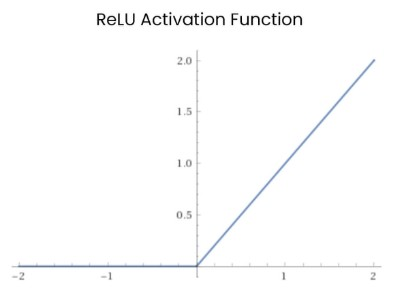

Activation Functions
In part one of this Quick Introduction to Artificial Neural Networks we examined a diagram of a neural network. This part will discuss activation functions. Activation functions set a threshold which determines the frequency at which artificial neurons fire (their output). In biological neurons the precise timing of the neuron firing conveys information, in artificial neurons only the frequency is important.
Linear Activation Function
The linear activation function simply returns the neuron input value as its output value, without manipulating it at all. This type of activation function is often used where regression is to be applied, and the network is to learn to output numeric values. For example, modelling linear regression, a statistical technique for determining the relationship between values.
Step Activation Function
The step activation function only output two values based on input, 0 or 1. If the input value is below 0.5 the returned value is 0, if the input value is 0.5 or above the returned value is 1. This allows the mapping of boolean values, true and false.
Sigmoid Activation Function
The Sigmoid activation function compresses input values to values between 0 and 1.0.

Hyperbolic Tangent Activation Function
The Hyperbolic Tangent activation function, also called the tanh activation function conforms input signals to values between -1.0 and 1.0. It is similar to the Sigmoid activation function, with the additional value range of 0 to -1.0.
This additional range proves useful when the input values to the network are negative. In such circumstances the Sigmoid function reduces such negative values to near 0, which results in the networks parameters being updated less regularly and negatively affecting training. The Tanh function does not suffer this same flaw, as negative values are not forced into a positive range.
Rectified Linear Units (ReLU)
The Rectified Linear Units (ReLU) activation function does not compress values to a small range like the Sigmoid or Tanh activation functions, which compress input values to 0 to 1, or -1 to 1.0 respectively. The increased range offered by ReLU results in far superior performance in training compared to both Sigmoid and Tanh.

Softmax Activation Function
The Softmax activation function compresses values to positive values between 0.0 and 1.0. Typically placed in output layers of networks used for classification, the Softmax neurons allow the prediction of outputs to certain classes.
Summary It can be difficult to grasp the usefulness of the different activation functions, at first glance they all look the very similar. Further, how do you decide between them? Luckily, there are best practices and established use-cases. For example, the Softmax activation function is usually found in the output layer of a classification network, the Softmax neuron with the highest value dictates the predicted class of the input value – remember that the neurons have been trained and thus it can be said that the neurons belong to certain classes as decided by the training.